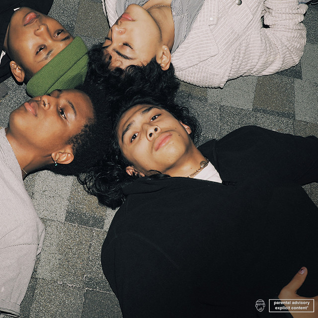
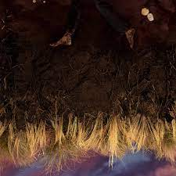
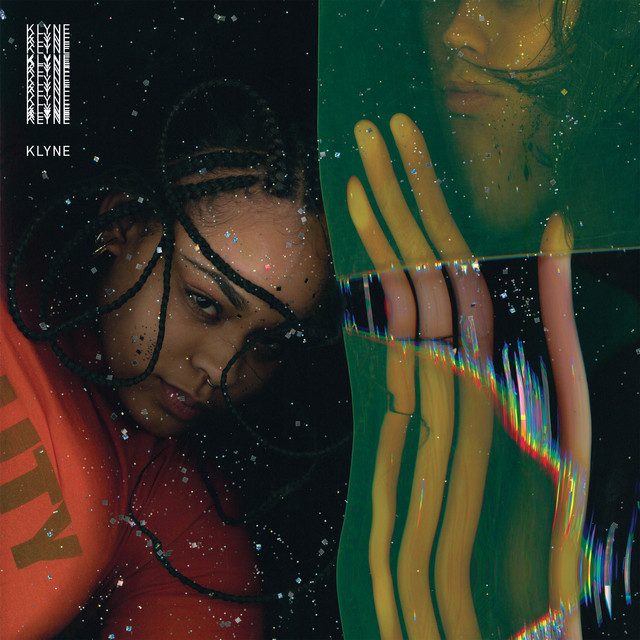

RECENT MUSIC ON REPEAT
A brief glance at some music I've been jamming to recently.
Blues/Soul
Feet Don't Fail Me Now -- Joy Crookes
Album cover courtesy of
Spotify
- Genre(s): R&B/Soul
- Why I Like it: It's hypnotically pleasing to listen to, especially
when walking to and from classes since the rhythm of the song matches my walking pace.
Just the Two of Us (feat. Bill Withers)-- Grover Washington, Jr.

Album cover courtesy of
Spotify
- Genre(s): Jazz/Rhythm & Blues/Soul Music
- Why I Like it: I've recently been playing this song as I get ready
in the mornings. It's so vibey and I love the instrumentals on this track.
Rap
Dance Now (feat. Kenny Mason) -- JID, Kenny Mason

Album cover courtesy of
Spotify
- Genre(s): Rap
- Why I Like it: I enjoy the cadence and inflections of JID's voice.
Also, similar to Memphis by AG Club, it retains a laid-back feel while simultaneously
being a hype-up song.
Memphis -- AG Club

Album cover courtesy of
Spotify
- Genre(s): Rap
- Why I Like It: It strikes a balance of hype energy while giving
off a nonchalant, kickback vibe.
Alt/Indie
Eat Your Young -- Hozier

Album cover courtesy of
Spotify
- Genre(s): Alternative/Indie
- Why I Like it: Hozier is one of my all time favorite artists, so I
was excited for his new music drop. Right from the start of the song I was hooked.
The song gives off dark academia, femme fatale vibes and I am here for it!
Water Flow -- Klyne

Album cover courtesy of
Spotify
- Genre(s): Alternative/Indie
- Why I Like it: I like to listen to this song after a long day or
during a late night drive through the city. The gentleness of the song helps to release
the tensions of the day.